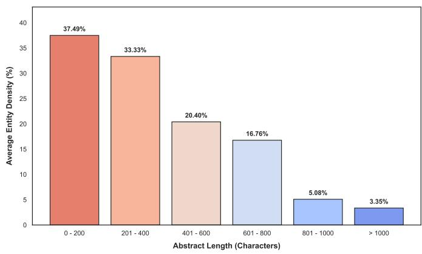

上节课讲了这篇论文要解决的问题。本节课需要理解两个关键概念： Token（模型处理文本的最小单位）和 ICL（上下文内学习）。 下面会先花 3 分钟讲清楚这两个概念，再进入正文。
⚡ 先修：两个你需要知道的概念
Token 是什么？
你写的一句话，模型不是一个字一个字看的，而是切成小块。每一块叫一个 Token。
比如 "I love chemistry" 可能被切成 ["I", "love", "chem", "istry"] 这样 4 个 token。中文的话，"我爱化学"可能被切成 ["我", "爱", "化学"]。
所以模型的「上下文窗口」有 8192 tokens，不是说它能记住 8192 个字，而是它能处理大约 6000 个英文单词或 4000 个汉字的信息量。
ICL（In-Context Learning / 上下文内学习）是什么？
传统机器学习：拿一堆数据训练模型 → 训练好了 → 拿去用。
ICL 不同：你不用训练模型，只需要在提问时给几个例子，模型就能照着例子做。
不给新同事讲一堆理论（训练），而是直接给他看 2-3 个做好的例子（"你看，这种格式的输入，输出应该是这样子的"），他就能照着做。这就是 ICL。
本篇论文的 SCoPE 框架就用到了 ICL——在 prompt 里塞了一个输入-输出对的例子，模型看了之后就知道"哦，我要输出这个格式的 JSON"。
🗂️ 数据从哪来？
爬取：CNKI 化学文献摘要
论文自己写了一个 Python 爬虫，从中国知网（CNKI）自动抓取化学和药学领域的文献摘要。这些摘要是非结构化文本——就是一段一段的自然语言描述，不是规整的表格数据。
数据清洗：让乱数据变干净
爬下来的原文很"脏"，需要处理：
- 统一编码格式（有些是 UTF-8，有些是 GBK）
- 去除不可见的控制字符
- 去除残留的 HTML 标签
- 标准化化学符号（比如全角/半角统一）
- 统一物理单位表达（/L、%、µmol/L 等）
这一步很重要——LLM 如果输入的数据格式不统一，输出的质量也会不稳定。
人工标注：299 条标准答案
清洗后的数据需要人工标注作为"标准答案"（Ground Truth）。
标注人员对着每条文本，从中提取出论文定义的 6 个字段。如果有某个字段在文本中没出现，就标为 "None"（空值）。
最终获得了 299 条高质量的标注样本，用于评估模型的提取效果。
一个有趣的现象：实体密度
论文定义了一个概念叫 实体密度（Entity Density）：
Entity Density = (提取出的实体总字符数) / (输入文本总字符数) × 100%简单说就是：一段文本里，有用信息占多大比例。
论文发现了一个规律（Fig. 2）：文本越长，实体密度越低。
什么概念？
- 0-200 字的短文本：实体密度约 37.5%（近 4 成是有用信息）
- 超过 1000 字的长文本：实体密度降到只有 3.4%（96% 都是无关描述）
这就好比在一堆沙子里找金子——沙子越多，金子越难找。这解释了为什么长文本提取更难，也说明了论文框架的必要性。

为什么选 Moonshot-v1-8k？
论文比较了 4 个主流模型，最终选择了 Moonshot-v1-8k：
| 模型 | 谁开发的 | 特点 |
|---|---|---|
| Moonshot-v1-8k 选中 | 月之暗面 | 8192 token 上下文窗口，ICL 能力强，严格遵循格式 |
| DeepSeek-V3.2 | 深度求索 | 化学式和英文名方面略好，但整体不如 Moonshot |
| Qwen-Plus | 阿里巴巴 | 整体表现低于 Moonshot |
| GLM-4-Flash | 智谱 AI | 部分字段表现不错，但综合不如 Moonshot |
选 Moonshot 的三个理由：
- 上下文窗口刚好够用：8192 tokens 能覆盖论文数据集中的长文本，又不会像超长上下文模型那样慢到无法接受
- ICL 表现稳定：给一个示例（one-shot），它就能准确复制 JSON 格式输出——这意味着自动化流程中很少因为格式问题而崩溃
- 低随机性：论文把 Temperature（温度参数，控制模型输出的随机程度）锁定在 0.1，让输出一致性更高
Temperature 控制模型输出的"创造力"：
- 低 Temperature（如 0.1）：每次输出都差不多，稳定可靠，适合信息提取
- 高 Temperature（如 0.8）：每次输出不一样，更有创意，适合写故事
这篇论文要的是稳定提取，所以用 0.1。
这节课的核心
| 问题 | 答案 |
|---|---|
| 数据从哪来？ | 从 CNKI 爬取化学文献摘要，经过清洗和人工标注 |
| 有多少条标注数据？ | 299 条 |
| 实体密度说明了什么？ | 文本越长，有用信息占比越低，提取难度越大 |
| 为什么选 Moonshot-v1-8k？ | 上下文窗口合适、ICL 能力强、输出稳定 |
| Temperature 设多少？为什么？ | 0.1，为了保证输出一致性 |
课后练习
练习 1：ICL 类比
用自己的话，用一个"教人做事"的例子来解释 ICL（上下文内学习）是什么意思。
参考答案
"就像你想让实习生学会填报表，你不给他讲三天培训课（训练），而是直接给他看一张填好的样板（示例），说'就照这个格式填'。他看了之后就会了——这就是 ICL。"
练习 2：实体密度计算
一段文本共 500 个字，从中提取出的实体信息共 80 个字。实体密度是多少？
答案
80 / 500 × 100% = 16%
🤔 练习 3：想一想
为什么论文用了低 Temperature（0.1）？如果设成高 Temperature（0.8），会有什么后果？
参考答案
低 Temperature 保证每次对同一条文本输出的提取结果基本一致。如果设成 0.8，模型可能每次输出不同格式或不同内容，自动化系统就没法稳定解析了。